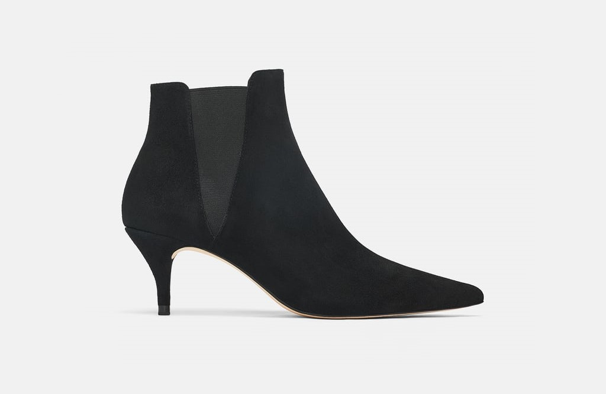

Femmes
Robes de Soirée
Idéal pour les soirée estivales, les bals et les galas, les robes rehausse l'élégance de toutes dames. Se terminant au cheville, à la mi-cuisse, au genou, épaule dégager, camisoles, manches longue, il y en a pour tous les goûts et tous les évènements.


Manteaux
L'hiver approche à grand pas, c'est le moment idéal pour se démarquer des autres. Couleurs variés, formes extravagantes, froufrous de fourrure, les manteaux représentent très bien la personnalité de tous.
Souliers
À chaque occasion son soulier, il faut choisir le bon. Du talon aiquille au talon court, de la sandale au soulier fermé, vos pieds ont besoins de ce qui a de mieux.
Sacoches
On ne sort plus de la maison sans sa sacoche. Elles servent à nous distinguer des autres. Nos modèles posssèdent autant de style qu'ils sont pratique.